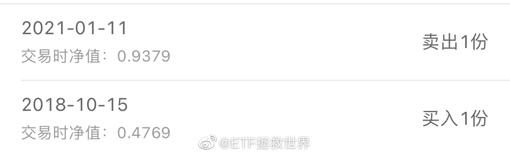
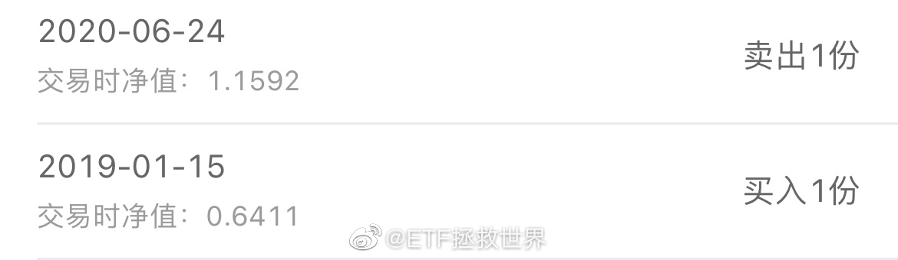
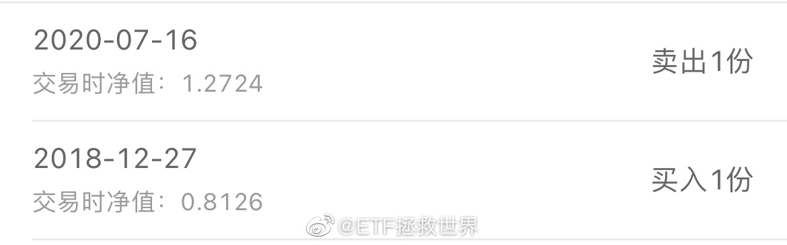

18年底19年初后，我们的长期策略几乎没有买过什么东西了。你去看任何一个品种，会非常惊讶的发现：绝大部分最后一次买入居然是两年多前。最近几个月零星的买了几份，完全是开胃菜级别。最近这几个月，卖出比买入多太多了。网格开了6个品种，有4个品种卖光了，一个持有一份，一个持有两份。你自己说说，你该盼着下跌还是盼着上涨？我虽然涨跌都舒服，但是手里现金越来越多，所以如果跌回钻石坑意味着又能抄底，更开心啊！
正所谓塞翁失马焉知非福，又所谓祸兮福之所倚。之前棉花这件事，让很多人开始尝试国产运动品牌，然后发现也非常好穿。更重要的是，打破了很多人N和A穿起来更有面子的固有思维。上次说了，买的那双国产跑鞋很满意。以后别人我管不了，我自己以后肯定优先考虑国货，也会给儿子灌输国货运动品牌很不错的思维。当然，以后他愿意穿什么是他的自由，我不会干涉，但是会潜移默化的引导。